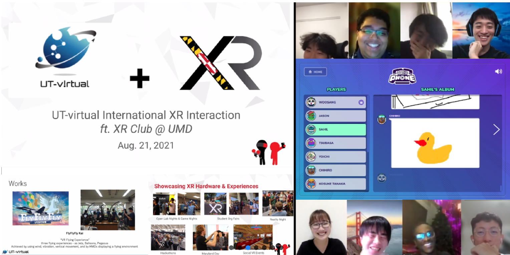
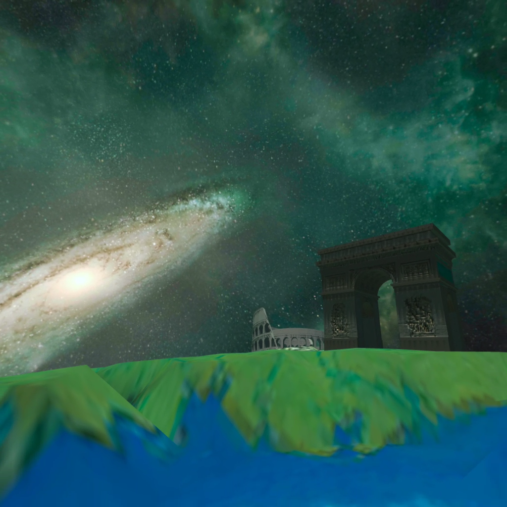

UT-virtual is the University of Tokyo's intercollegiate virtual reality club where students from all over Japan gather.
UT-virtualは、全国（日本）の学生が集う、東京大学のインカレ バーチャルリアリティサークルです。
定例会やイベントに参加するなど活動をしました．
海外のVRサークルと活動内容やアイデア共有し，異文化の交流をするため，マリーランド大学のXR Clubとの国際交流会を主催しました．
また，コロナの影響より世界旅行が厳しかったため，世界旅行をするVRゲーム作成し，CIC Tokyoにて展示しました．
Homepage URL
Role
Member
UT-virtual International XR Interaction ft. XR Club @ UMD

VR Game Development


Role
Game Development (Unity)